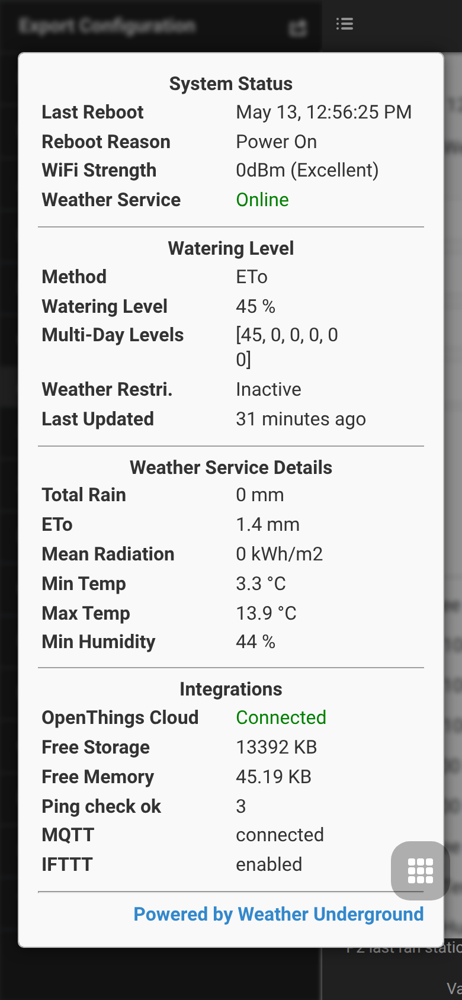

MCP Server — AI Access for OpenSprinkler
The OpenSprinkler MCP (Model Context Protocol) integration lets AI assistants query and control an OpenSprinkler controller through documented tools.
This page now covers only MCP setup and operating modes. Program creation and sensor automation are split into separate pages:
Operating modes
Built-in firmware MCP
The built-in MCP server runs directly in ESP32 firmware builds with USE_OTF enabled. It is accessed over Streamable HTTP:
POST http://<controller-ip>/mcp
Content-Type: application/json
Authentication uses the same admin password hash as the REST API, either as ?pw=, X-OS-Password or bearer token.
Platform availability: ESP32 / ESP32-C5 only with USE_OTF; not ESP8266 and not OSPi.
External Node.js MCP server
The external server under tools/mcp-server/ runs outside the firmware and proxies the REST API over stdio. It works with ESP8266, ESP32 and OSPi controllers and exposes a broader tool set, including sensors, monitors, Zigbee, BLE and system resources when supported by the target controller.
Setup
Prerequisites
- Node.js 18 or newer.
- A reachable OpenSprinkler controller.
- The controller admin password as MD5 hash.
Install and build
cd tools/mcp-server
npm install
npm run build
VS Code / GitHub Copilot
Add a server entry to .vscode/mcp.json:
{
"servers": {
"opensprinkler": {
"type": "stdio",
"command": "node",
"args": ["tools/mcp-server/dist/index.js"],
"env": {
"OS_BASE_URL": "http://<CONTROLLER-IP>",
"OS_PASSWORD_HASH": "<MD5-HASH>"
}
}
}
}
Claude Desktop
Add a server entry to ~/.config/claude/claude_desktop_config.json:
{
"mcpServers": {
"opensprinkler": {
"command": "node",
"args": ["/full/path/to/tools/mcp-server/dist/index.js"],
"env": {
"OS_BASE_URL": "http://<CONTROLLER-IP>",
"OS_PASSWORD_HASH": "<MD5-HASH>"
}
}
}
}
Compute the password hash
echo -n "your_admin_password" | md5sum | awk '{print $1}'
Tool overview
| Area | Example tools |
|---|---|
| Controller state | get_all, get_controller_variables, get_options, get_debug, get_system_resources |
| Stations and programs | get_stations, get_station_status, get_programs, manual_station_run, manual_program_start, change_program |
| Sensors and logs | get_sensors, get_sensor_values, get_sensor_log, get_sensor_types, backup_sensor_config |
| OpenSprinklerPro radios | get_ieee802154_config, get_zigbee_devices, get_zigbee_status, get_ble_devices, get_rainmaker_status |
| Automation | list_adjustments, configure_adjustment, list_monitors, configure_monitor |
Useful context screens
The MCP server itself has no controller UI screen. For field diagnostics, use System Diagnostics to verify firmware version, memory and integrations before connecting external tools.
